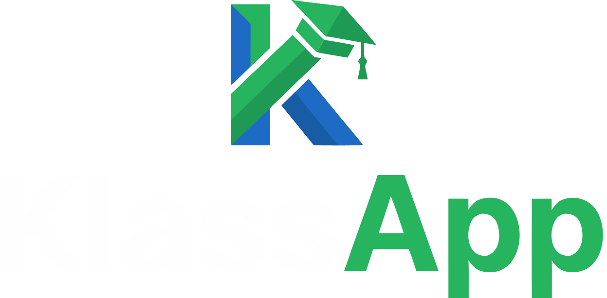

Icon
klassapp-icon.svg · official · 2000² · the canonical source for all favicons

Horizontal — light
klassapp-horizontal-light.svg · canonical · “Klass” #0E2347 · “App” #22B560

Stacked — light
klassapp-stacked-light.svg · composed · same colours
Icon — reversed
klassapp-icon-reversed.svg · derived · same paths, fills #FFFFFF
Horizontal — dark
klassapp-horizontal-dark.svg · official · #0C1528 plate baked in

Stacked — dark
klassapp-stacked-dark.svg · composed · “Klass” #FEFEFE · “App” #26B45F